Halloween is one of the most exciting times of the year for kids, and the best part is you do not need anything fancy to celebrate it with a craft session. Halloween construction paper crafts are the perfect activity because everything you need is already on hand: a pack of construction paper, a pair of scissors, and some glue. That is truly all it takes to spend an afternoon making spooky, silly, and surprisingly cute decorations together. 🎃
This list brings together 20 of our favorite halloween construction paper crafts for kids, from super-simple toddler-friendly ideas to slightly more involved projects for older children. Every single idea uses basic supplies, keeps mess low, and ends with a result your child will actually be proud of. Whether you are decorating the house for the season or just looking for a cozy afternoon activity, this list has something for everyone.
What You'll Need
Most of these halloween construction paper crafts share the same small set of supplies, so one quick round of gathering will set you up for the whole list.
- Crayola Construction Paper (480 sheets, 10 colors), a generous pack that includes black, orange, and white, which are the core colors for Halloween projects.
- Elmer's Washable School Glue Sticks, clean, reliable, and easy for small hands to use without making a mess.
- Fiskars 5" Blunt-Tip Kids Scissors, the go-to scissors for young crafters, with a safe tip and a blade angle that makes clean cuts easy for little hands.
- DECORA Self-Adhesive Googly Eyes (800 pieces, assorted sizes), perfect for bringing bats, ghosts, mummies, and cats to life with a silly, wobbly look.
- Crayola Ultra Clean Washable Markers (40 count), great for adding facial details and decorative touches that wipe off skin easily.
- White chalk marker or white gel pen, useful for drawing details on black paper without needing to cut every small shape.
- Clear tape or string, for finishing garlands, mobiles, and anything you want to hang.
- Pencil, for tracing shapes before cutting.
20 Halloween Construction Paper Crafts to Make with Your Kids
1. Paper Jack-o'-Lantern
Cut a large orange circle from construction paper, then cut small black triangle eyes, a square nose, and a wide jagged mouth from black paper and glue them onto the orange circle. Add a short green paper stem at the top to complete the classic pumpkin look. This is one of the most beginner-friendly halloween construction paper crafts on the list, and even very young children can help place the facial features. Make a few in different sizes and arrange them as a windowsill display.
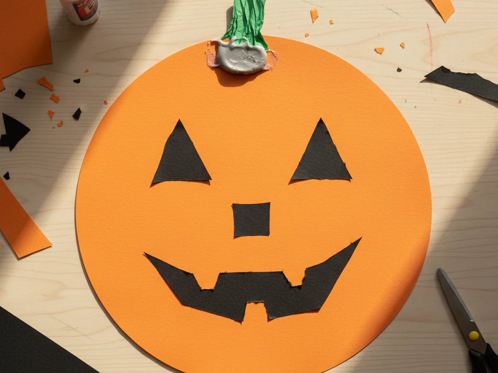
2. Construction Paper Bat
Fold a piece of black construction paper in half and draw half a bat wing shape along the fold, then cut it out and open it up to reveal perfectly symmetrical wings. Add a small oval black body in the center with two tiny white paper ears and a pair of googly eyes for a charming, slightly goofy bat. Construction paper bats are incredibly quick and kids can make a whole flock in under twenty minutes. Hang them from the ceiling with thread for an instant spooky effect.
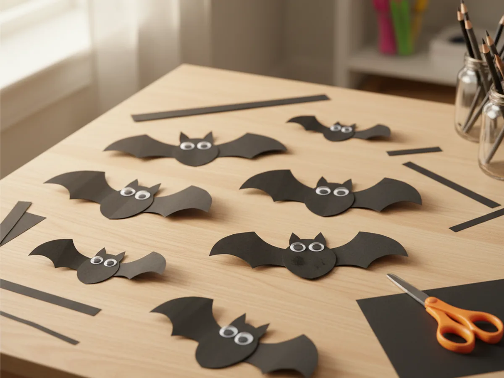
3. Paper Ghost Garland
Fold a long piece of white construction paper accordion-style, then draw a simple ghost shape on the top layer so that the hands or sides touch the fold on both edges. Cut it out and unfold to reveal a connected chain of ghosts. Draw small dot eyes on each one with a black marker for personality. A paper ghost garland is one of those halloween construction paper crafts that genuinely looks impressive for how little effort it takes, and children feel a real sense of magic when they unfold the chain for the first time.
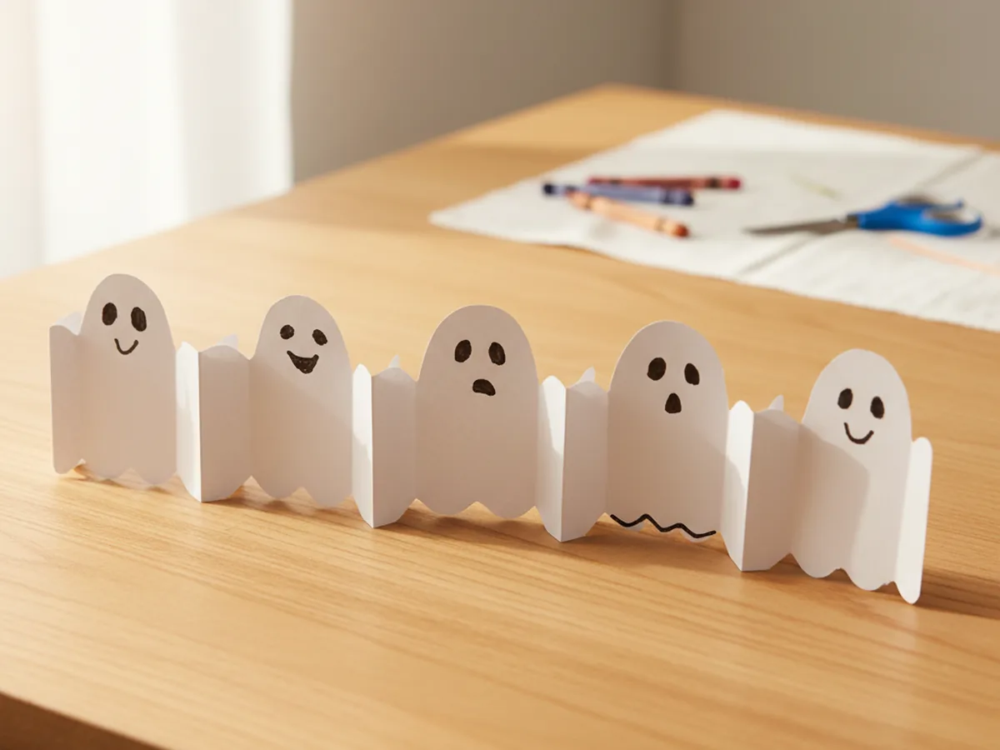
4. Paper Spider and Web
Draw a spider web on a sheet of black construction paper using a white chalk marker or white gel pen, making concentric circles connected by straight lines radiating out from the center. Then make a spider from a black paper circle body with eight thin black strip legs and two googly eyes glued on top. Place the spider in the middle of the web or off to one side for a more dramatic look. This is a wonderfully atmospheric halloween construction paper craft that works beautifully as a window decoration.
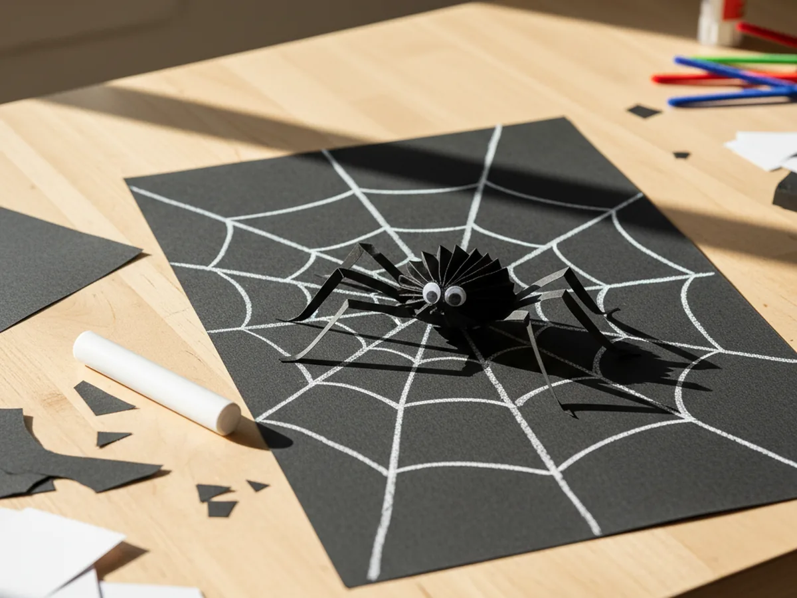
5. Black Cat Construction Paper Silhouette
Cut a black cat silhouette with two pointy ears and a curved tail from black construction paper, then glue it onto a large orange circle to represent a full moon. Mount it on a dark background for a bold, graphic Halloween display. This classic Halloween scene is satisfying for kids of all ages and the contrast of black on orange makes it look polished even when the shapes are a little uneven. It is one of those simple halloween construction paper crafts that doubles as real wall decor.
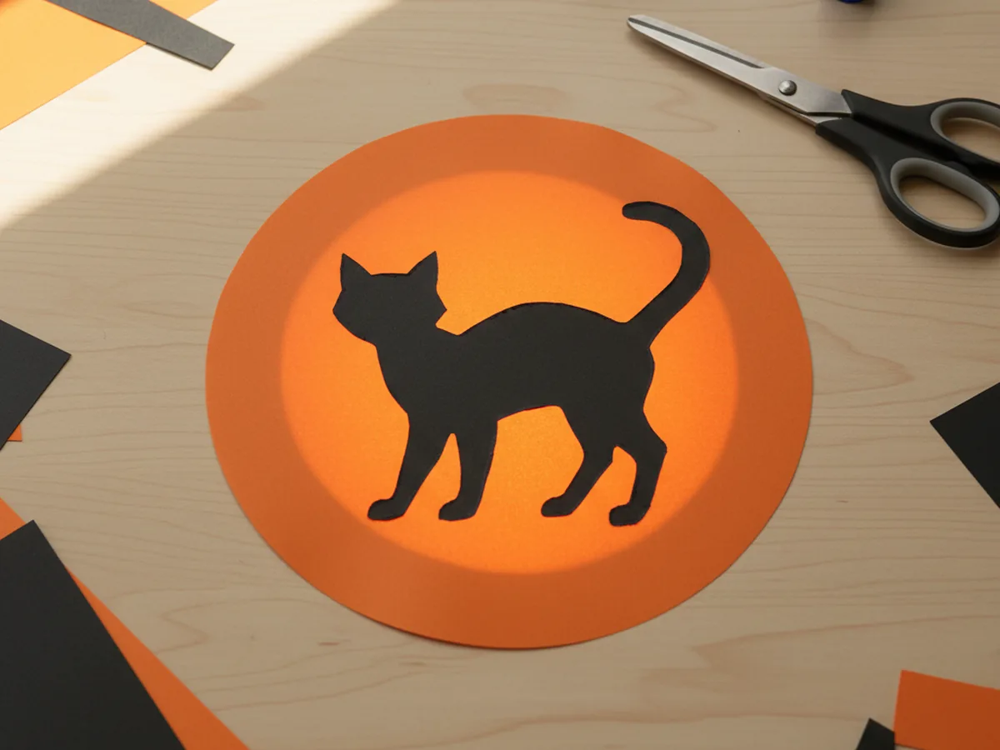
6. Paper Witch Hat
Roll a large sheet of black construction paper into a tall cone and secure it with tape, then trace and cut a wide flat brim circle from black paper and glue it around the base of the cone. Wrap an orange or purple paper band around the lower part of the cone for a pop of color. This wearable halloween construction paper craft is a huge hit with kids who love to dress up, and it is surprisingly sturdy for something made entirely from paper. A great finishing touch for any Halloween costume.
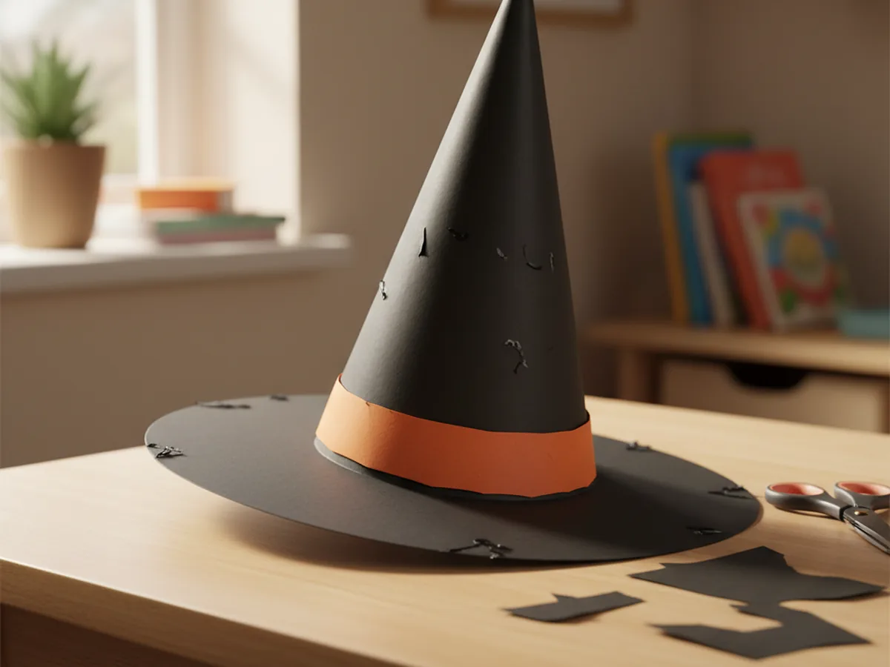
7. Paper Frankenstein
Cut a large rectangle from light green construction paper for the head, then add a strip of black paper across the top for flat-top hair, two small grey squares on the sides for neck bolts, and draw on heavy brows and a flat stitched grin with a black marker. Glue on googly eyes for a friendly, goofy Frankenstein that children absolutely love. Paper Frankenstein faces are a beginner-friendly halloween construction paper craft that come together in under twenty minutes and look fantastic lined up on a wall.
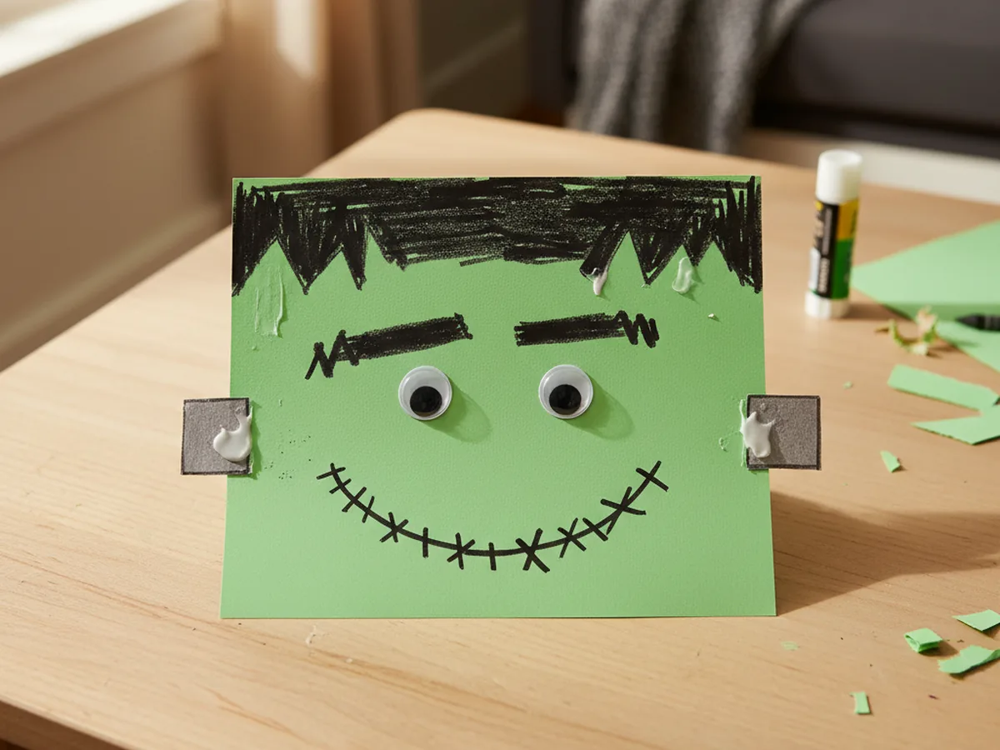
8. Paper Skeleton
Cut white oval and rectangle shapes from white paper and arrange them on a black construction paper background to build a full skeleton, including a rounded skull, a ribcage, arms, legs, and hands. The shapes do not need to be perfectly even; in fact, the slightly wobbly look of a child-cut skeleton makes the finished piece even more charming. A paper skeleton collage is one of the more involved halloween construction paper crafts on this list, but the result is genuinely impressive and a wonderful keepsake from the season.
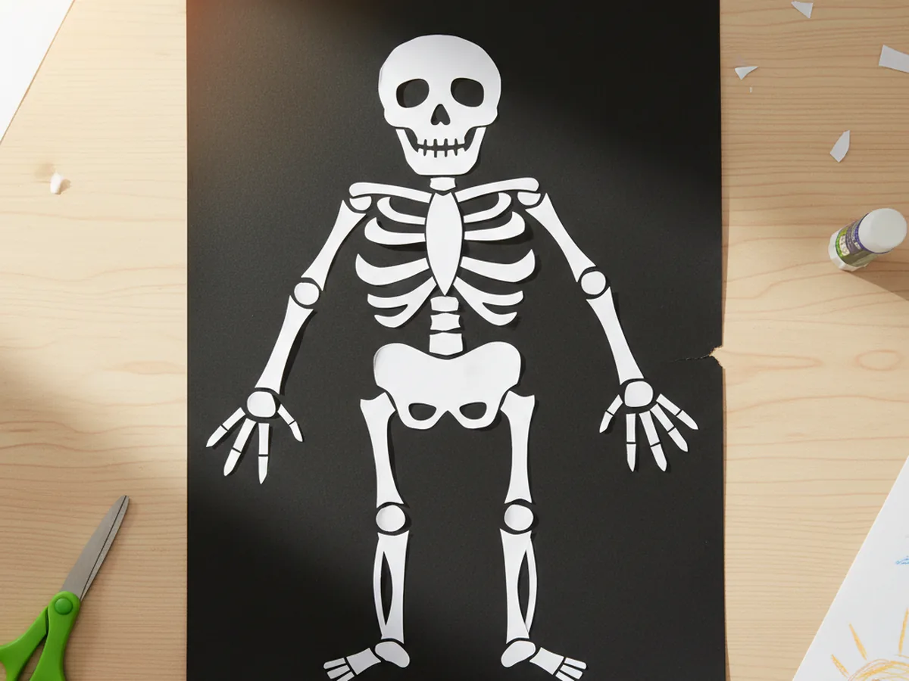
9. Halloween Paper Owl
Cut a large orange teardrop shape for the owl body, two big white circles with black paper pupils for the eyes, a small orange triangle beak, and two brown accordion-folded wings to attach at the sides. Stand the owl upright using a small folded tab at the bottom or mount it flat on a background. Paper owls feel very at home in the Halloween season, and this little character is one of the cutest halloween construction paper crafts in the whole list, especially when a row of them sits along a shelf.
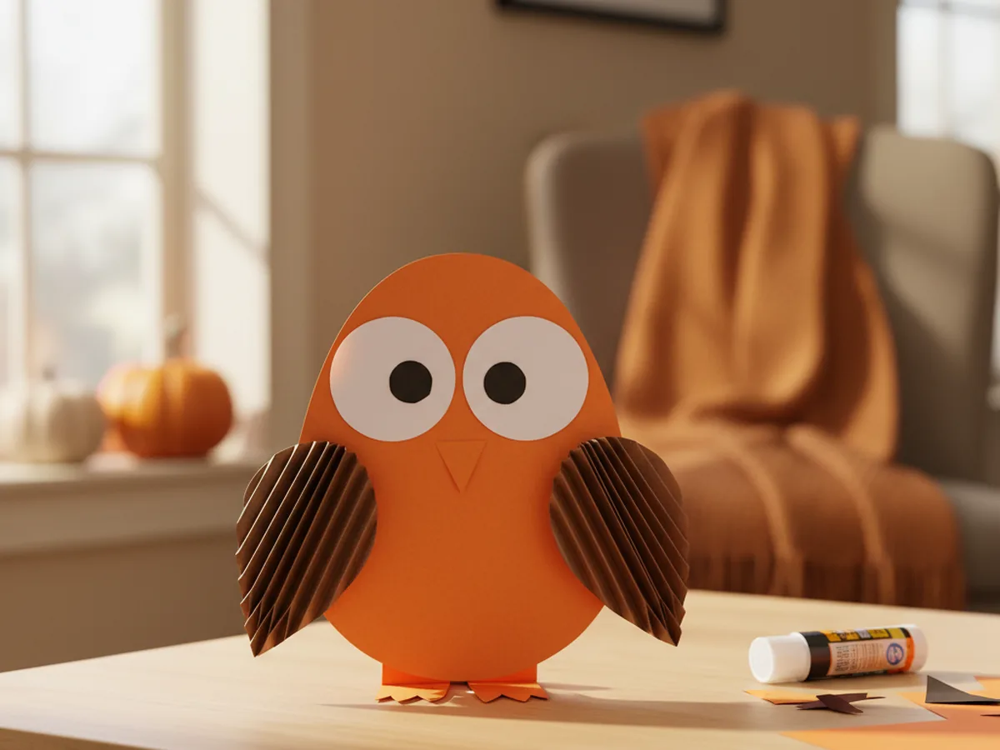
10. Paper Candy Corn
Layer three triangle shapes in white, orange, and yellow construction paper, each one slightly smaller than the one below, and glue them together to create the iconic candy corn shape. Make five or six in different sizes and arrange them in a cluster for a bright, cheerful display. Candy corn is one of those instantly recognizable Halloween symbols that even the youngest crafters can manage since it is just triangles. This is one of the fastest and most visually satisfying halloween construction paper crafts on the list. 🍬
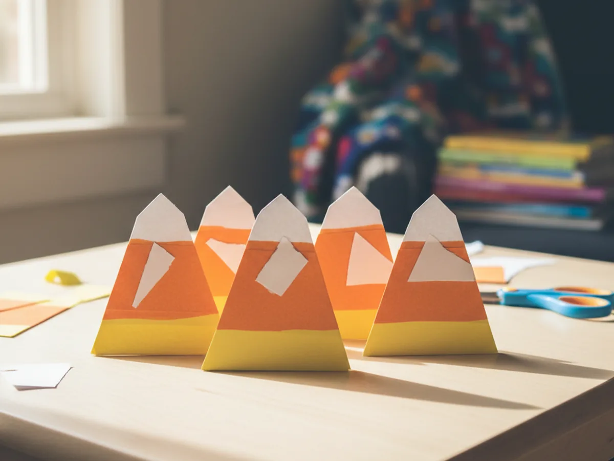
11. Construction Paper Mummy
Cut a long oval body shape from white construction paper, then cut thin horizontal strips of white paper and glue them across the body in overlapping layers like bandages, leaving small gaps to show the white underneath. Add two googly eyes peeking out from between the wrapping near the top. Mummies are a wonderful subject for halloween construction paper crafts because the cutting and layering process itself is satisfying and meditative for kids who enjoy detailed work.
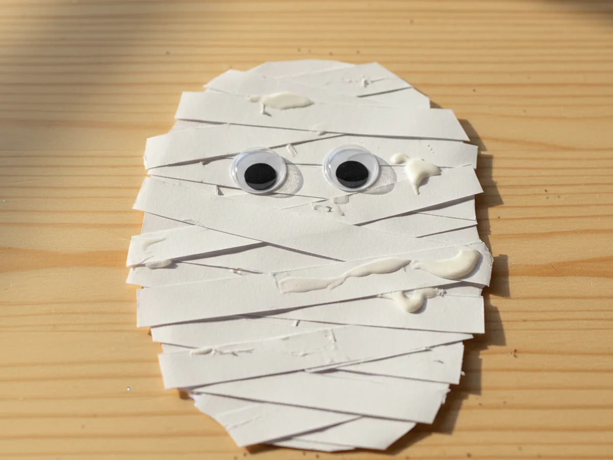
12. Paper Bat Mobile
Make three or four black construction paper bats of different sizes and attach them to lengths of thread at varying heights, then tie all the threads onto a small twig or wooden dowel. Hang the finished mobile from the ceiling or a door frame for a gently swaying Halloween decoration. A bat mobile is one of those halloween construction paper crafts that looks much more impressive than the effort involved, and children love watching their paper bats float and turn in the air. 🦇
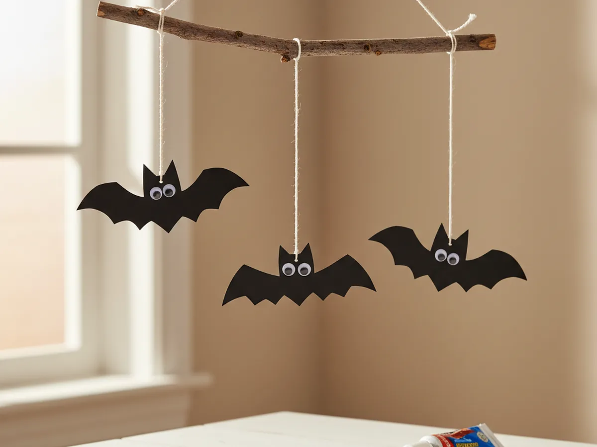
13. Paper Haunted House
Cut a house silhouette with a peaked roof, a tall chimney, and an arched doorway from dark grey or black construction paper, then glue it onto a black background. Add yellow rectangle windows, a crooked paper moon, and tiny ghost shapes peeking from behind the roofline. Bare tree silhouettes in dark paper framing each side add to the spooky atmosphere. A paper haunted house scene is one of the most elaborate halloween construction paper crafts on this list and makes a stunning piece of Halloween art when finished.
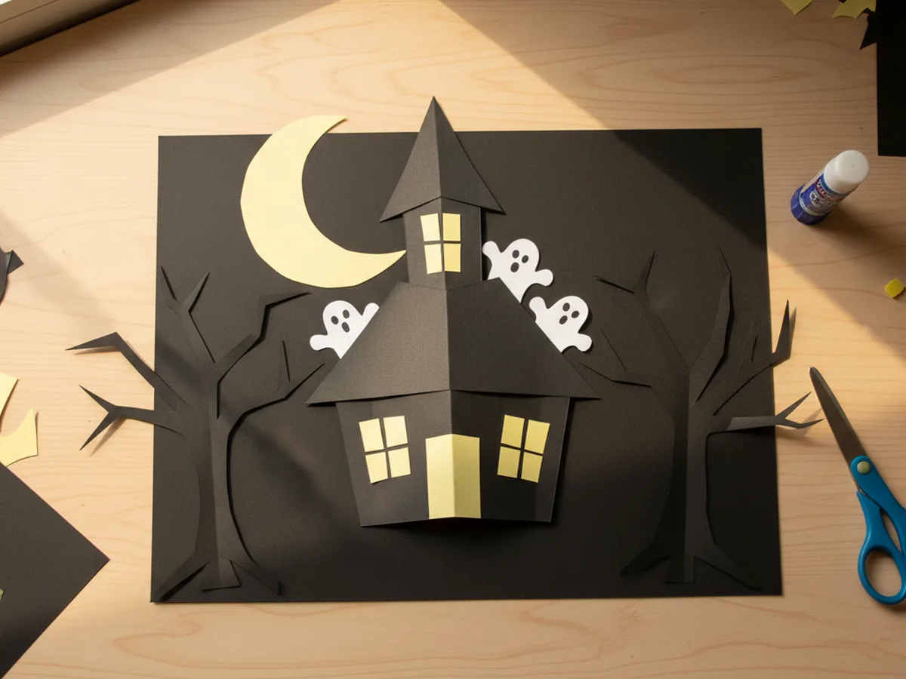
14. Paper Witch
Cut a tall pointed hat from black paper, a triangular cape body, stick arms, and a small circular head from skin-tone or green paper. Add a tiny orange nose from a curled strip of paper and draw on a wide grin with a black marker. A paper witch is a favourite subject for halloween construction paper crafts and can be as simple or as detailed as your child wants to make her. Mount the finished witch on a broomstick made from a brown paper stick with yellow paper fringe bristles for extra fun.
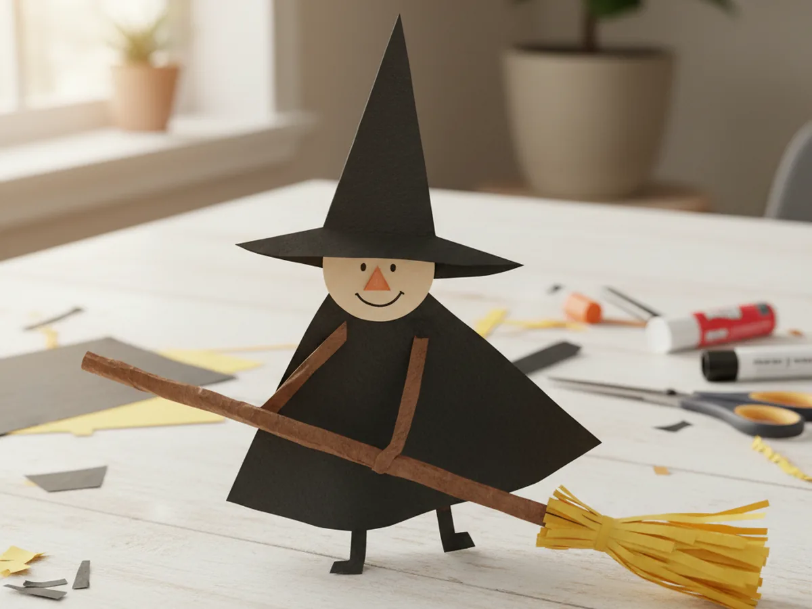
15. Paper Cauldron
Cut a wide cauldron shape from black construction paper, round at the bottom with slightly flared sides and a rim at the top. Add a looping handle from a curved black paper strip. Cut small scraps of green, purple, and orange paper and layer them inside the top opening to look like bubbling potion. A paper cauldron is a straightforward and satisfying halloween construction paper craft that pairs well with a witch or wizard theme and makes a fun accompanying decoration to a paper witch.
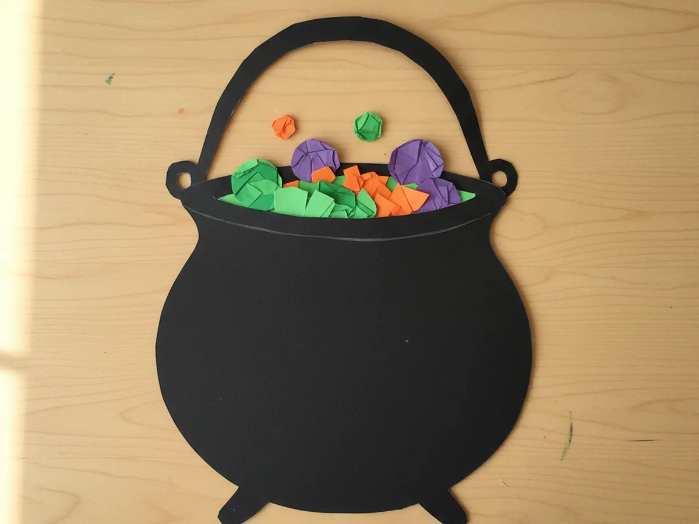
16. Construction Paper Vampire
Cut a pale oval or rectangle for the vampire face, add a sharp widow's peak hairline in black paper, two white fangs at the bottom, and a dramatic black cape shape behind the body. Draw on thin arched eyebrows and sleepy eyes with a black marker for that classic vampire expression. A paper vampire is a fun and slightly silly take on Halloween monsters and makes a great companion to a paper Frankenstein or skeleton. Children enjoy the theatrics of building the cape and fangs for this halloween construction paper craft.
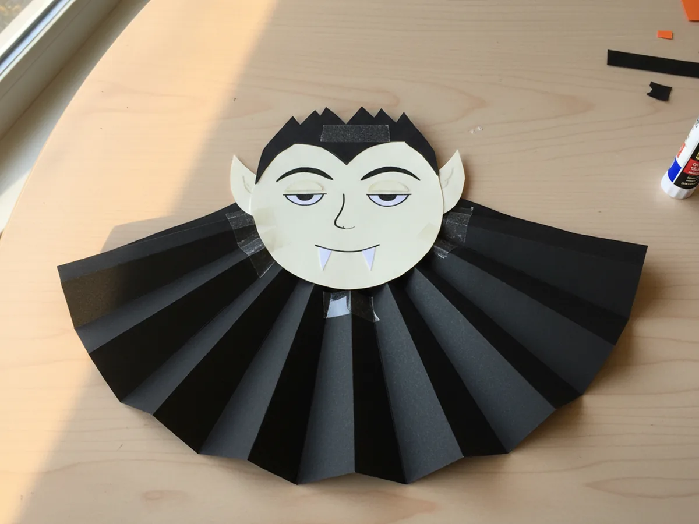
17. Paper Eyeball Garland
Cut white circles of varying sizes from white construction paper, then draw a colored iris and a black pupil on each one with markers to make a collection of creepy eyeballs. Punch a small hole at the top of each circle and thread them all onto a length of string or twine, spacing them apart. Hung across a doorway or mantle, this garland is undeniably spooky and absolutely hilarious at the same time. It is one of those halloween construction paper crafts that gets a big reaction from every single visitor.
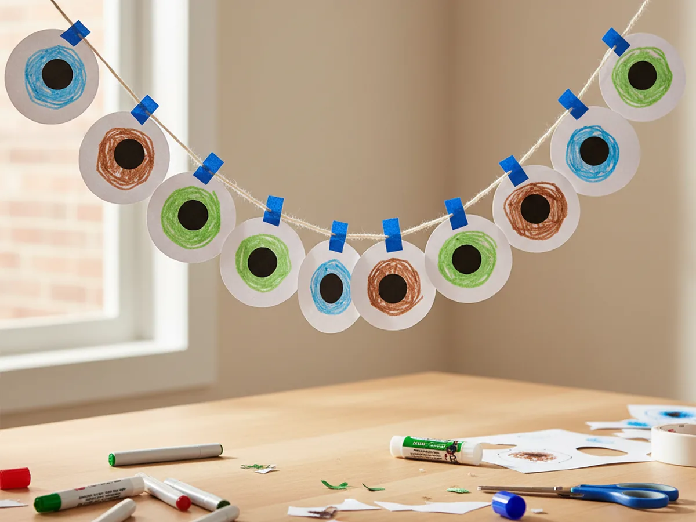
18. Halloween Paper Lantern
Fold a sheet of orange or black construction paper in half lengthwise and make a series of parallel cuts from the folded edge, stopping about an inch from the open edge, then unfold and roll into a cylinder, joining the short ends with tape. Add a strip of paper as a handle at the top. This classic paper lantern technique makes a wonderful halloween construction paper craft when made in orange and black, and a row of them glowing on a table with a small LED tealight inside looks magical during an evening Halloween party.
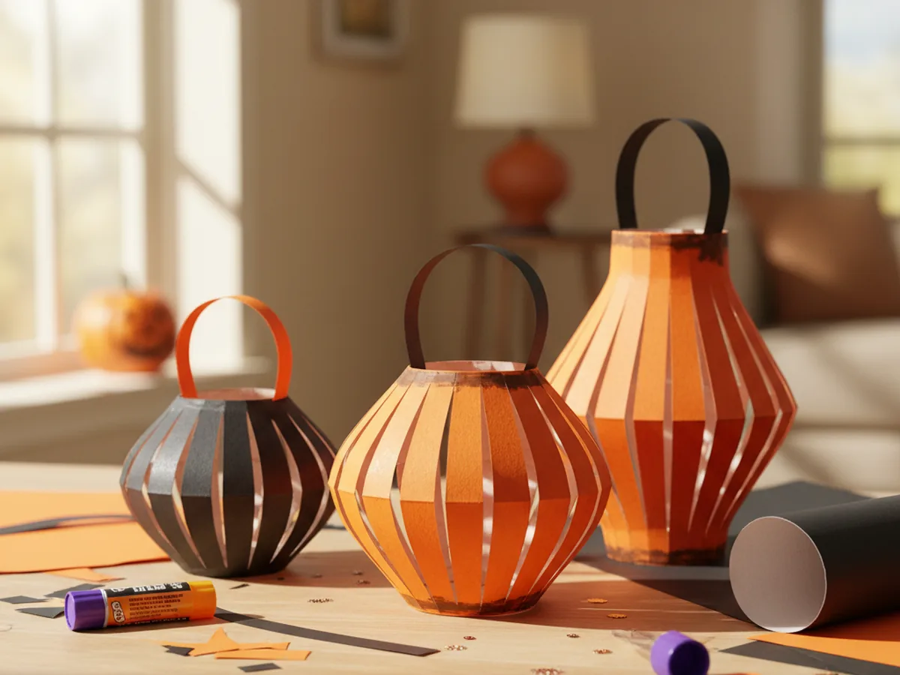
19. Paper Scarecrow
Build a scarecrow figure from layered construction paper shapes: a brown straw hat with yellow paper fringe peeking out from the brim, a colourful patchwork shirt, trouser shapes, and more yellow fringe at the cuffs for straw hands. Mount the whole figure on a brown paper stick. A paper scarecrow is the kind of halloween construction paper craft that takes a little more time but rewards the effort with a wonderfully character-filled result. Children love deciding the colors for the patchwork shirt.
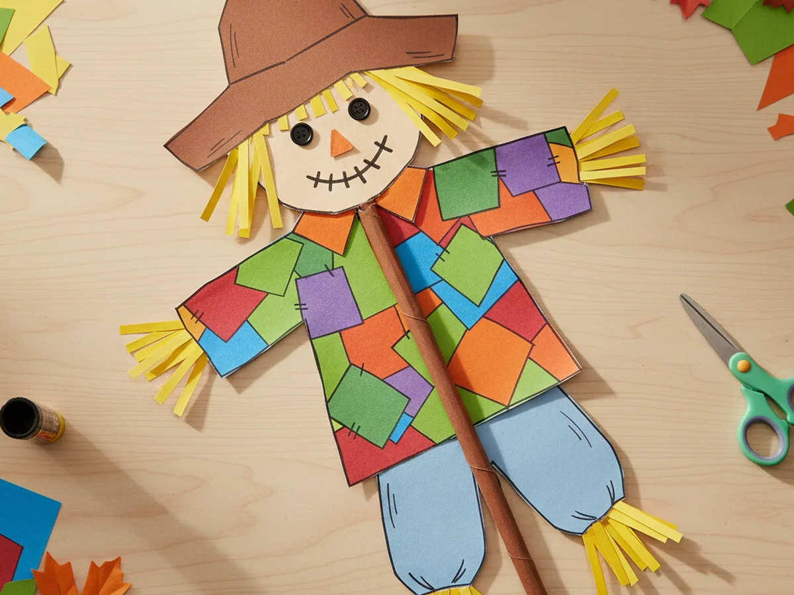
20. Halloween Trick-or-Treat Bag
Fold a large sheet of orange construction paper in half, staple or tape the two open sides to form a bag, then punch two holes near the top and thread a purple or black ribbon through as a handle. Let your child decorate the outside with a jack-o-lantern face, stars, or bats using markers or paper cutouts. This functional halloween construction paper craft is extra special because your child can actually carry it on Halloween night, making it one of the most meaningful things you can make together before the big evening arrives.
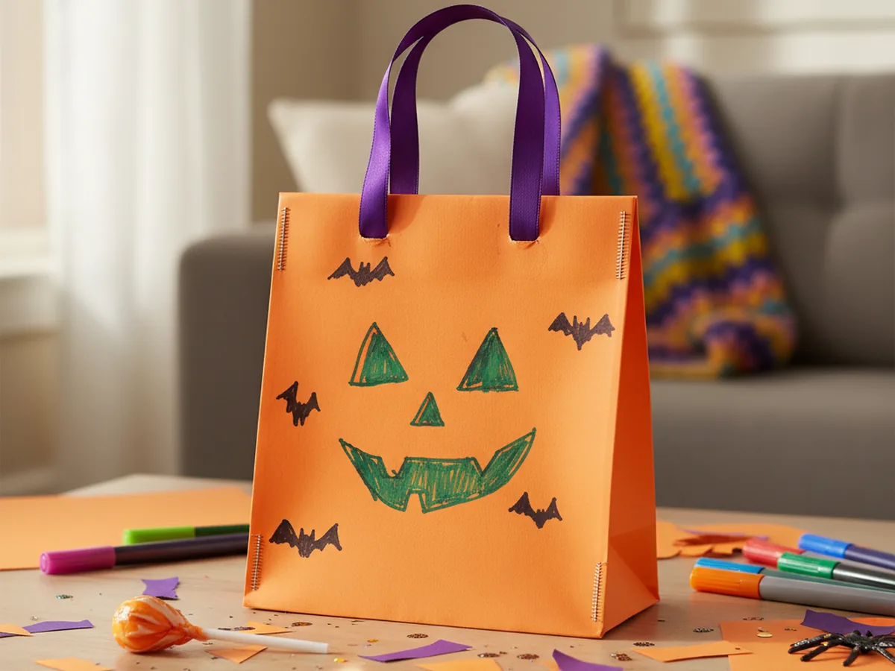
Final Thoughts
There is something genuinely special about sitting down with your child and turning a stack of construction paper into a whole Halloween world. Halloween construction paper crafts are low-cost, low-mess, and endlessly flexible, which means there is always something on this list to match your afternoon, your supplies, and your child's current level of patience. Whether you make one craft or ten, you are not just decorating the house. You are making a memory together that your child will think back on for years. Pick one that sounds fun and just start. That is all it takes.
More Crafts You'll Love
If you enjoyed these Halloween ideas, here are two more craft lists to explore together.
Grab a fresh stack of construction paper and enjoy every creative moment with your little ones. 👻